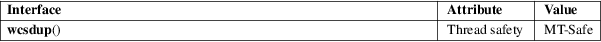

wcsdup − duplicate a wide-character string
Standard C library (libc, −lc)
#include <wchar.h>
wchar_t *wcsdup(const wchar_t *s);
Feature Test Macro Requirements for glibc (see feature_test_macros(7)):
wcsdup():
Since glibc 2.10:
_POSIX_C_SOURCE >= 200809L
Before glibc 2.10:
_GNU_SOURCE
The wcsdup() function is the wide-character equivalent of the strdup(3) function. It allocates and returns a new wide-character string whose initial contents is a duplicate of the wide-character string pointed to by s.
Memory for the new wide-character string is obtained with malloc(3), and should be freed with free(3).
On success, wcsdup() returns a pointer to the new wide-character string. On error, it returns NULL, with errno set to indicate the error.
|
ENOMEM |
Insufficient memory available to allocate duplicate string. |
For an explanation of the terms used in this section, see attributes(7).

POSIX.1-2008.
libc5, glibc 2.0.
strdup(3), wcscpy(3)